Research Report
Mental Health
Status
of
Middle Adolescents
(Age 12-19)
Prepared by: Team AASHA
Kritika Karakheti
Pranita Rijal
Kusum Sapkota
Mahesh Raj
Bhim Chaudary
Shruti Gurung
Mentor: Ojaswi Pandey
Abstract
Few studies have specifically examined mental suffering or disease, and research on young people's opinions on mental health is still in its infancy. This paper presents the results of a qualitative study that utilized case answers to investigate how the young participants formed their conceptions of what constituted mental illness. The key findings of the study are then discussed concerning how young people classified atypical behavior, their comprehension of the behaviors connected to various mental health issues, and their views toward the persons in question.
Introduction
In 2019, as reported by WHO, 1 in every 8 people in the world had a mental health issue. In 2020, the number of people living with such issues increased significantly because of the SARS-CoV-2 (COVID-19).
In Nepal, the pandemic magnified the mental health crisis: limitations of existing mental health services in the country and increased mental health care needs, exemplified by a substantial increase in death by suicide. According to WHO, though more systematic data collection is needed, there is an indication of a 14% increase in the rates of suicide last year(than the previous year as per the records of Nepal Police). To address this issue, the Ministry of Health and Population (MOHP) introduced the National Mental Health Strategy and Action Plan 2020. However, it has not been operated on the problem-solving level.
According to the National Mental Health Survey conducted by Nepal Health Research Council from January 2019 to January 2020, 2.2 million students in the age group 16-40 years are estimated to suffer from some form of mental health issue. While the numbers are large, the challenges are made larger by the unawareness and cultural stigma surrounding mental health. As it is reported that almost all mental health issues start from age 14, this study aims to understand the mental health situation of adolescents and young adults (age 12 to age 22).
This report involves around 500 responses from all over the country. While the survey does not specifically focus on specific stressors and mental issues, we can analyze the physical care habits, educational mindset, quality of social interaction, use of social media, and social stigma and their roles as stressors.
Motivation for the Study
In order to make efforts to combat this mental health crisis in Nepal, much research is needed to assess the situation first and foremost. While various mental health situational assessments are available, they focus on understanding the overall population's condition and the services required. This study aims to understand the new generation by analyzing the general factors that affect mental health.
Furthermore, the findings will be used to build a research-based website and app that will make the process of accessing mental health professionals easier and build a community around mutual understanding for patients.
Overview of Our Survey
The results from the literature survey and focus group analysis led to 52 questions (including demographics) pertaining to daily practices, relational support, controls, and mental health estimators. The complete survey administered to the participants is included in the supplements. Our survey started with a consent question. The questions covered 9 areas (i.e., independent variables) related to mental health. The survey was administered online anonymously, thus, the question on the accuracy of the responses and sample population recall bias. Lastly, the survey included freeform questions for participants to share their experiences and opinions on mental health and how it could be improved.
Participants
In order to find participants, we approached schools and colleges using a convenience sampling technique. Through Google Forms, the whole population of teenagers between the ages of 12 and 19 was polled.
The data was gathered in September 2022. The project was introduced, the survey's goal was explained, and the schools were asked for their consent to participate in the study in a letter written to the school department.
Surveys were either mailed to the institution or then retrieved after completion, or they were carried out on-site by a research team at the institution. A piece of information regarding the study was included with each and every questionnaire to tell participants about it. The information sheet included information about the study's objectives, the substance of the questionnaire, confidentiality , option of participation, and withdrawal. The questionnaire's completion revealed that the student had given their implicit consent. The final analysis included only surveys that were fully completed.
Limitations of our survey
85% of our responses were from students attending private schools. Since the treatment in private schools varies significantly from public schools, the proportion of students in this survey is different than that of the overall student population. The percentage of male vs. female respondents was 49-51%, so there isn't any bias there. However, the survey did not track students who had access to the study but chose not to participate - so there could be a “pre-existing interest” bias, where participants w ith an interest in mental health issues are more inclined to respond, which can introduce bias in the data.
Data Analysis and Visualizations with Survey Questionnaire:
Out of the 467 participants sample size, the data was collected from 46 districts that spanned Eastern and Western provinces, including both urban and rural settings.
Some of the interesting findings include:
Social Media Usage
- - About 45% of participants reported using 2-6 hours of social media per day and about 20% reported using more than 6 hours per day.
- - About 70% of participants reported feeling somewhat insecure about seeing other people’s seemingly extravagant lives on social media.
- - So, with these statistics, it can be deduced that the use of excessive use of social media might have severe mental health issues in middle adolescence as there might occur more tendencies to compare the lifestyle factors during this age.
About 40% of participants described starting their studies a week before examinations.
About 75% of participants believed that it is possible to increase their talent regardless of the situation they start from,
This data shows most of the students postpone their studies until the exam is on their hands creating pressure for covering the syllabus and scoring good marks. This may create long-term exam fear in teenagers. These statistics show a high level of optimism and self-confidence in this particular group of participants. It is generally seen that self-appreciation is a sign of mental well-being.
Demographics Sampled
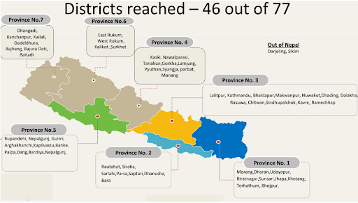We were able to cover 46 districts out of 77, including both urban and rural settings. Some of the urban settings samples include Kathmandu, Biratnagar, and Pokhara while some of the rural settings samples include Dadeldhura, Doti, and Siraha.
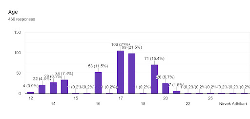We were able to collect the responses from ages ranging from 12-25, with x data points above the age of 20 as outliers.
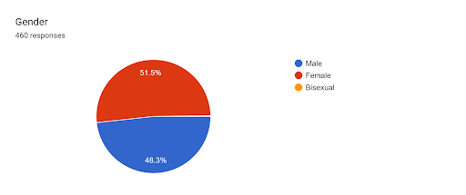We have 51.5% female, 48.3% male, and 1 bisexual participant in our survey.
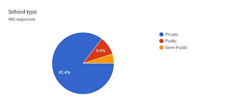We have 85.4% private schools, 9.6% public schools, and 5% semi-public school participants in our survey.
Rating of physical and mental health, along with sleep and diet factors:
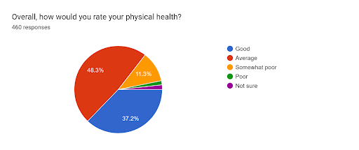 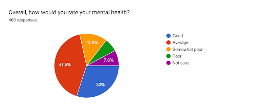 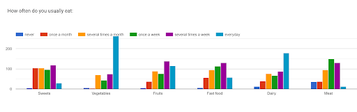
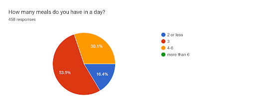
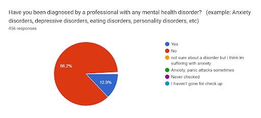
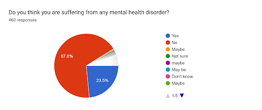
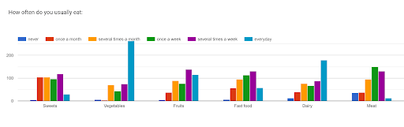
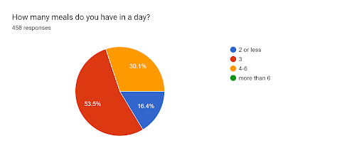
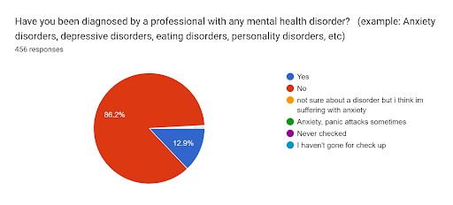
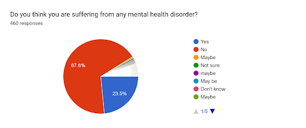
Role of Parenting and Relationship in Mental Health:
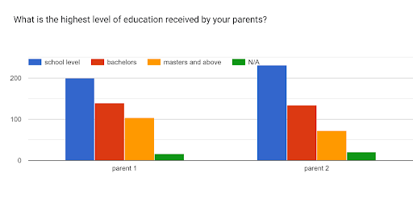 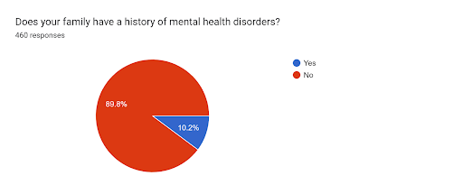 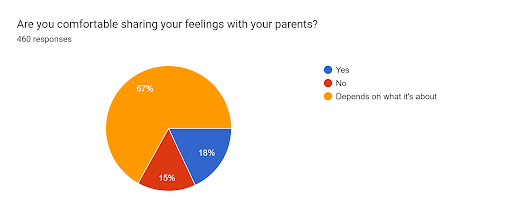 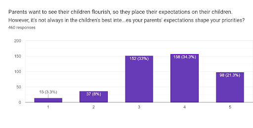 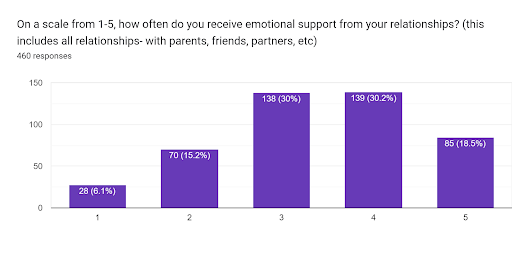 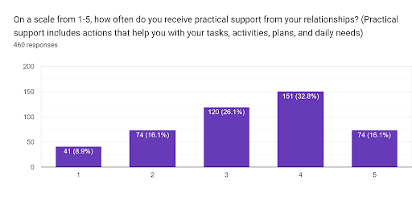Mindset and Academics:
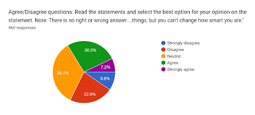 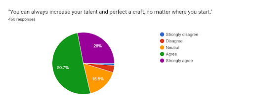 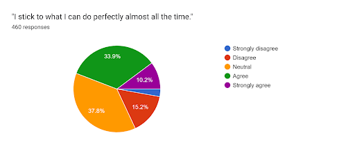 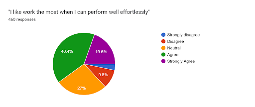 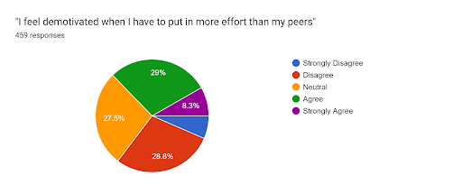 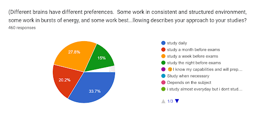Emotional State
 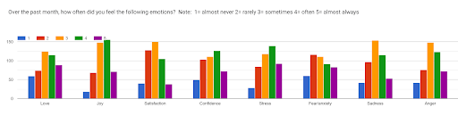
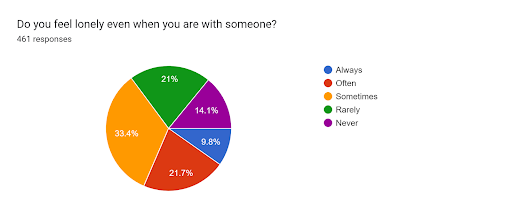
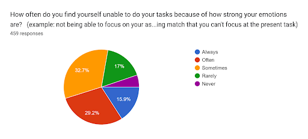
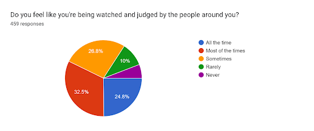
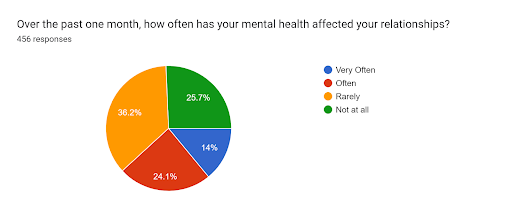
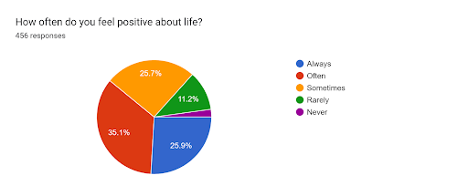
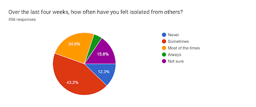
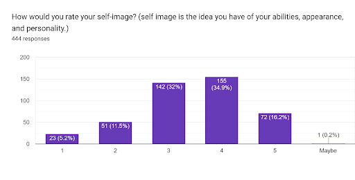
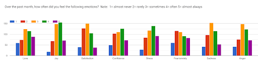
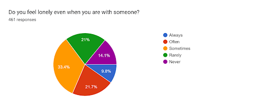
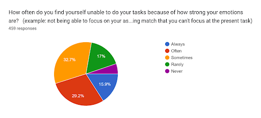
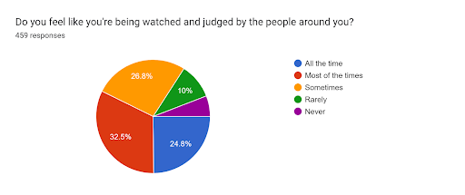
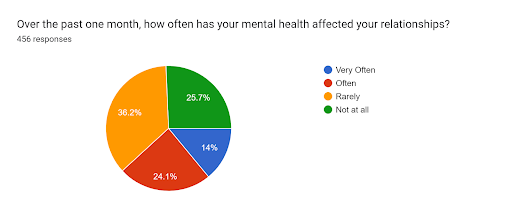
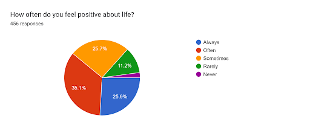
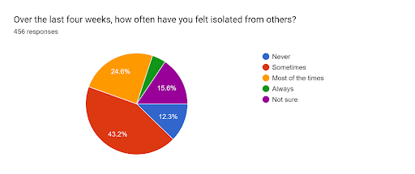
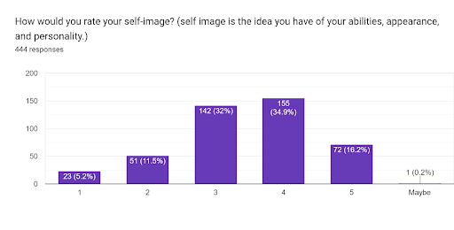
Emotional State
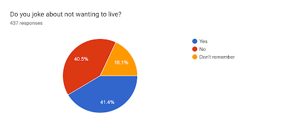 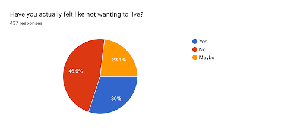 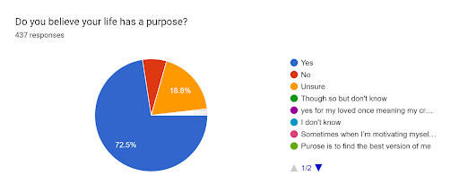 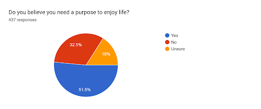 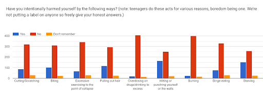Social Media:
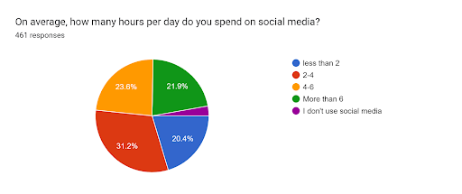 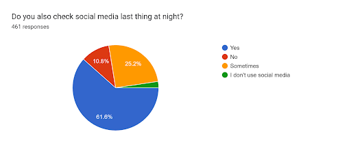
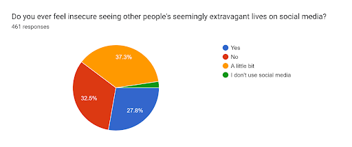
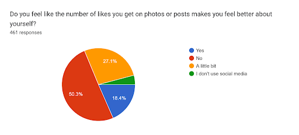
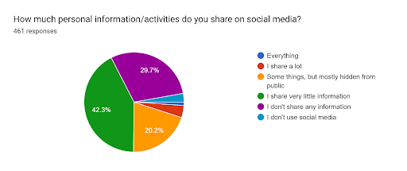
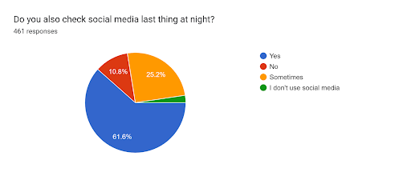
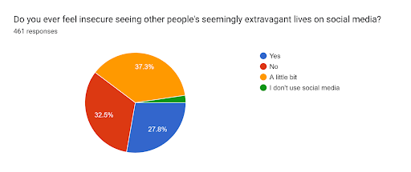
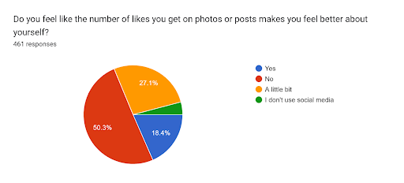
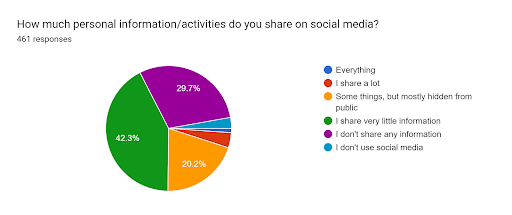
The interest of mental health curriculum in schools:
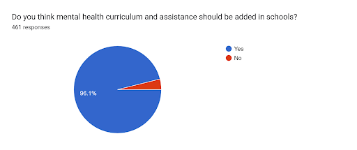